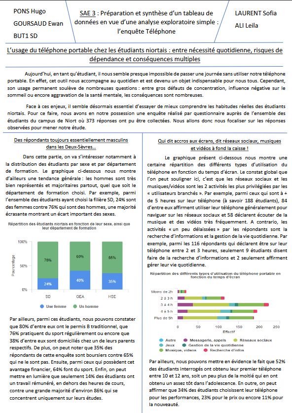
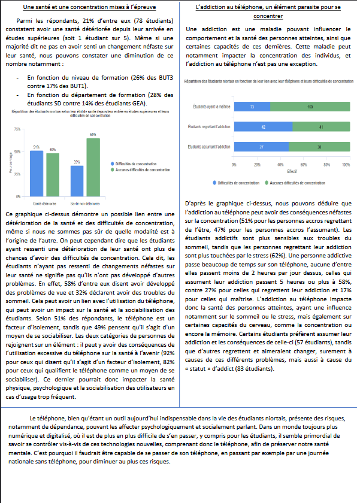
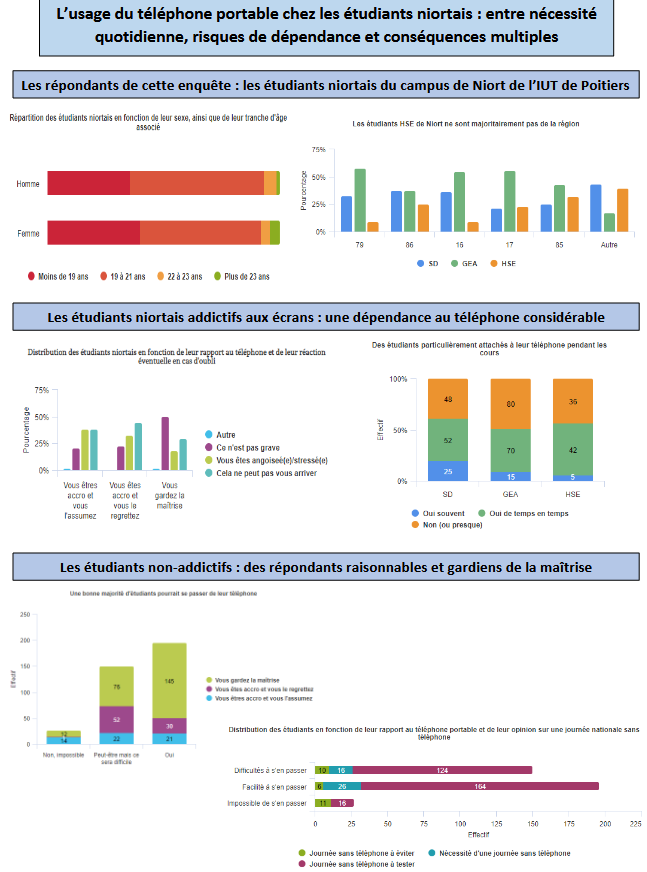

Cette SAÉ consistait à analyser les résultats d'une enquête réalisée sur l'application Sphinx. Elle concernait la vision qu'avaient les étudiants niortais vis-à-vis de leur téléphone.
Avec Hugo PONS, nous devions réaliser un rapport PDF dans lequel nous avions inséré des graphiques et des textes explicatifs, en soulignant certains résultats issus de l'enquête, vis-à-vis du profil des répondants ou de leurs réponses. Nous devions également réaliser un tableau de bord contenant des graphiques différents de ceux présents dans le rapport.